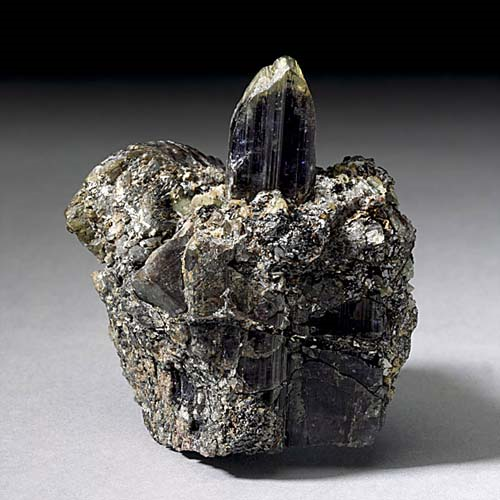

Zoisite - Ca2Al3(SiO4)(Si2O7)O(OH)
Sorosilicates


Habit: Yellowish green, green, brown, blue (tanzanite); colorless, purple, gray or pink (thulite). Crystals prismatic, vertically striated. Vitreous luster, sometimes pearly on cleavage; transparent to translucent. White streak.
Environment: Occurs in regional and contact metamorphic rocks; also in quartz veins, pegmatites and some eclogites.
Etymology: Named for Siegmund Zois, Baron von Edelstein (1747-1819), an Austrian natural scientist.